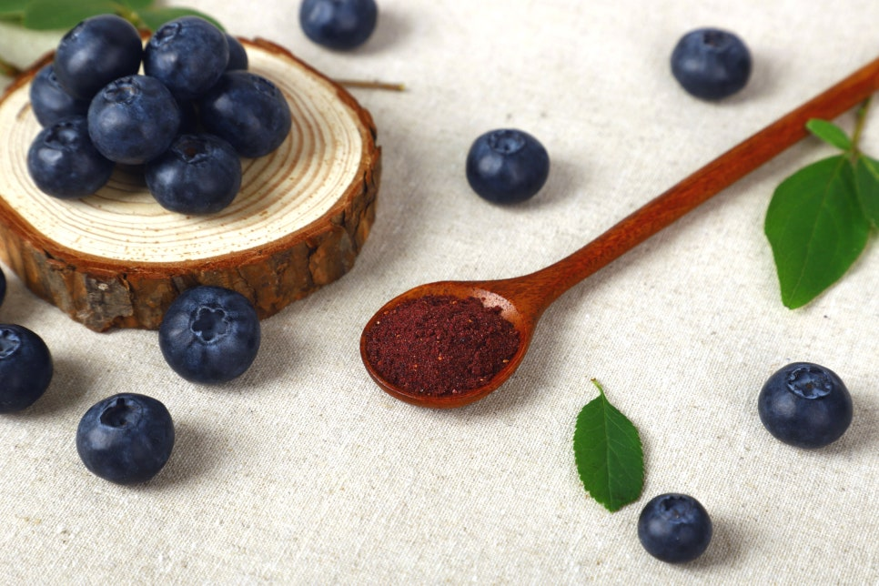

제철의 농산물을 더 다양한 모습으로
과일칩, 과일 분말과 과즙은 같은 농산물을 서로 다른 방식으로 즐길 수 있게 합니다.

과일칩
딸기, 블루베리, 감귤과 설아복숭아 등으로 동결건조 과일칩을 선보입니다.
과일 분말
동결건조 블루베리와 딸기 분말은 음료나 요거트, 디저트 등에 활용할 수 있습니다.
과즙과 진액
블루베리즙과 버섯 진액 등 액상 제품도 함께 소개합니다. 제품별 원재료와 용량을 확인해 용도에 맞춰 선택할 수 있습니다.
공식 참고 자료
원문 확인 ↗